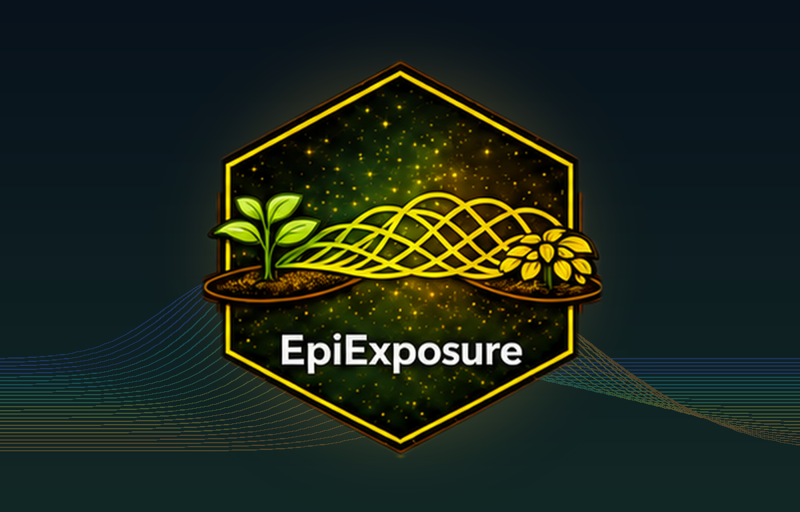

Open to research collaborations
Applying predictive modeling
I'm an Epidemiologist and Data Scientist and I work to transform complex biological and environmental data into decision-support tools for crop protection.
Universidade Federal de Viçosa · PhD Candidate in Plant Pathology

Last blog post
I am a plant disease epidemiologist and data scientist working at the intersection of plant pathology, quantitative modeling, remote sensing and computer vision. My research investigates when and how environmental conditions drive epidemics, how much yield and profit diseases take away, and which management decisions actually pay off, across soybean, rice and maize.
I am a PhD candidate in Plant Pathology at the Universidade Federal de Viçosa and a Visiting Research Scholar at the LSU AgCenter, where I work on rice diseases using computer vision and yield-loss modeling. I am also the developer of EpiExposure, an open-source R package for exposure–lag–response analysis in plant disease epidemiology. This site is a living record of my journey, projects, reading, and the ideas I'm excited about.
Education, research milestones, and the path to this point.
Research codes, applications, and experiments.
Full list available on Google Scholar and Lattes.
Open-source activity, publications and the toolkit behind my work.
Contributions over the last 12 months
Loading GitHub activity…
Public repositories on GitHub
Built from the topics, descriptions and names of my GitHub repositories
Loading keywords…
Languages, packages and software I use in my research
Short posts about articles I'm reading, ideas, and the life of research.
Distinctions, fellowships, and the stories behind them.
The mentors and colleagues who shape my research journey.
Records of conferences, field work, and the life of research.
Always open to discussing research, collaborations, or grabbing a coffee.